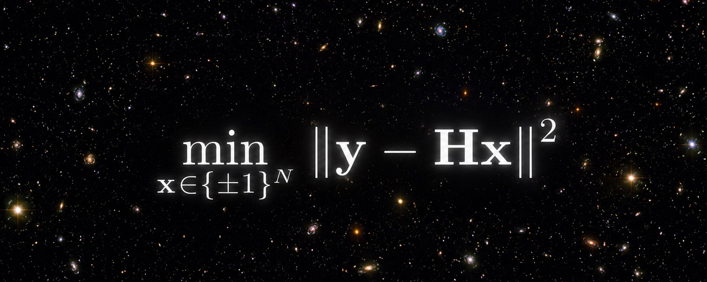
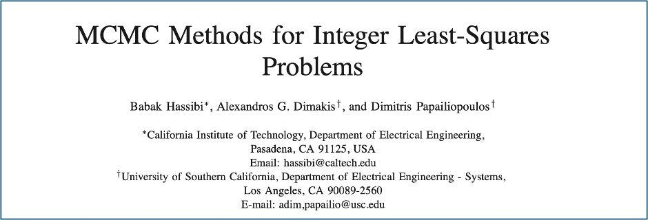
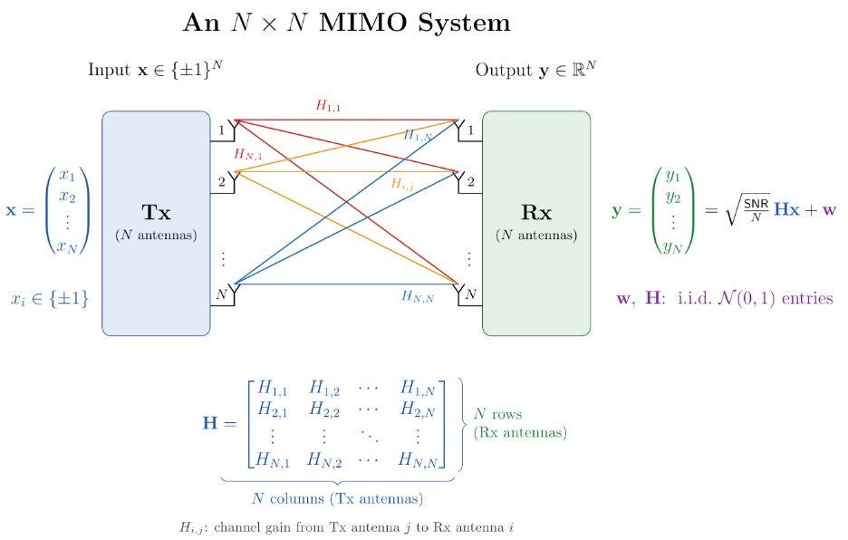
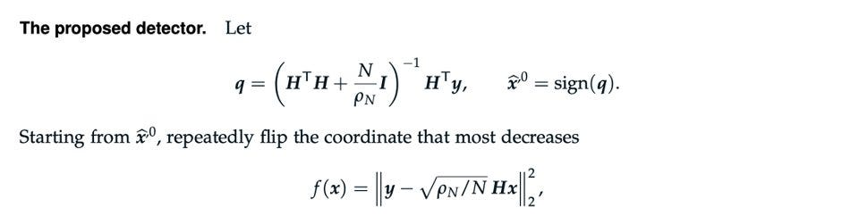
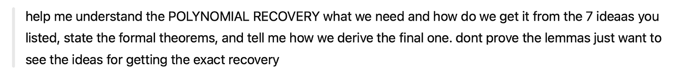
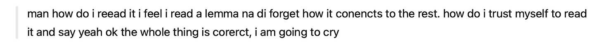
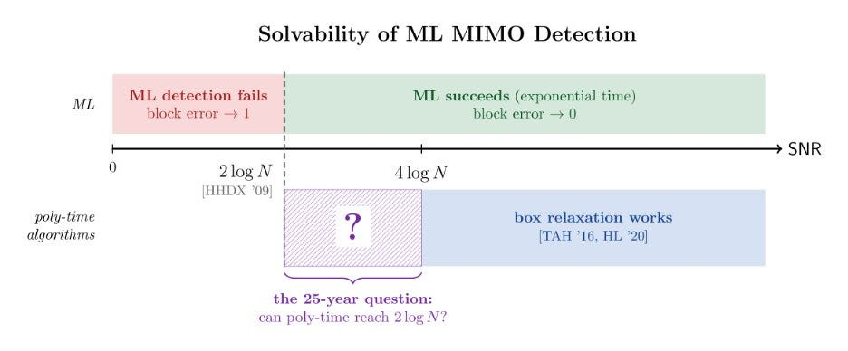
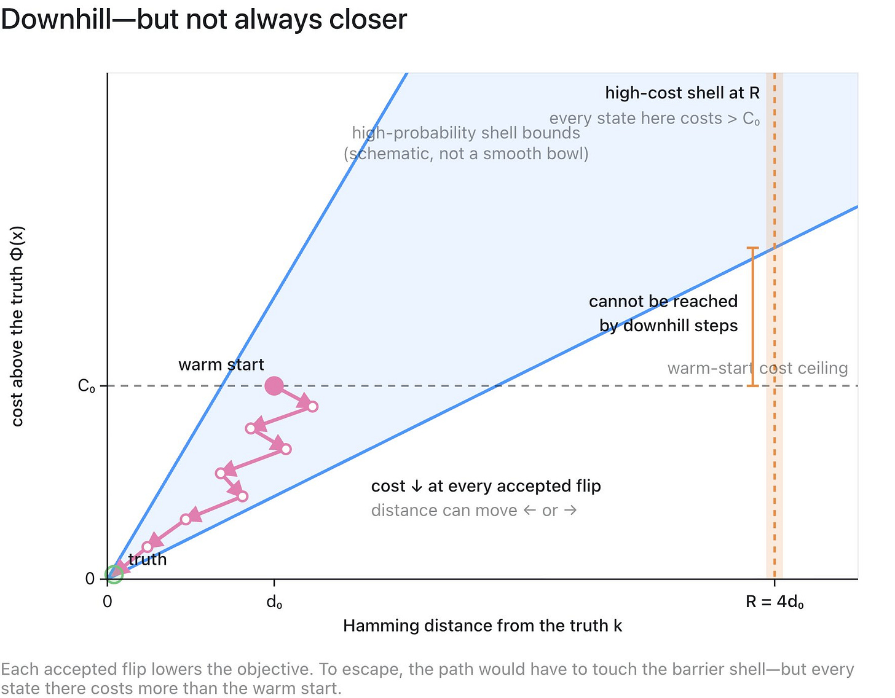

Last week, GPT-5.6 and Claude Fable appear to have settled an open theoretical question in wireless communications that was intensely studied between 2000 till the 2010s and that I briefly worked on as an anxious first-year PhD student. The answer finally arrived, perhaps because I was one of the last few to ask the question and the first to prompt the machines to solve it 😊
The result: you send N bits through an N×N Gaussian wireless channel, and the receiver must recover all of them exactly. It has been known since the 2000s that it is information theoretically possible to do so when the signal-to-noise ratio is at least 2 log N. But the only method known to reach that was an exponential search algorithm. There is now proof that a simple, polynomial-time algorithm succeeds at the exact same threshold.
Full paper11. anadim/anadim.github.io: MIMO_Detection.pdf. GitHub.
Let me tell you a little more about it.
In 2009, I worked on my first paper with Alex Dimakis, who soon after became my PhD advisor (not because of that paper):

The paper was among many attempts to offer a polynomial time solution to MIMO detection.
What is MIMO detection you ask?

A transmitter sends a vector of N bits through a wireless channel of N transmit and N receive antennas. The channel mixes the bits all together and adds noise. The receiver, who knows the channel matrix, has to figure out which bits were sent.
The block-error optimal receiver, aka the maximum likelihood (ML) detector, solves exactly this problem by finding the most likely vector that could have been sent, given the received signal. In this case, ML detection boils down to solving this fundamental discrete least squares problem:
Unfortunately, as with all good problems in life… ML detection is NP-hard22. S. Verdú. Computational complexity of optimum multiuser detection. Algorithmica, 1989..
Yet we are not TCS pessimists, and wireless channels are not worst-case, they are random, and the community had been working on the following question since the early 2000s:
When recovering the transmitted bits is statistically possible, can we do it in poly-time?
We didn’t make much progress on that question in that 2010 paper above, and despite plenty of work in the area, the problem has, as far as I understand, remained open since 200133. B. Hassibi, H. Vikalo. On the expected complexity of sphere decoding. Asilomar Conference on Signals, Systems and Computers, 2001. … aka a QUARTER OF A CENTURY to make it sound more dramatic.
Until last week. And the final answer comes out to
YES! Whenever perfect detection is statistically possible, you can do it in polynomial time.
MIMO solved; Done.
But who cares? We’ll come back to this in a second.
I am attaching the paper1 and I have spent 5+ days going back and forth with the models to simplify the proofs and the exposition (which was originally an absolute disaster), a process that took much much longer than the initial proof that GPT produced (which took around 30 minutes or so). The proof is long, but relatively elementary. I have verified everything and to the best of my ability to proof check, it is correct.
Now let me talk a bit more about the problem and its history, and why I think it’s worth writing about even though the field has moved on from this specific corner of MIMO detection theory.
The problem setting
So you transmit a binary vector x in {±1}^N, and receive
where H is N×N and both H and w have iid N(0,1) entries, all independent. The receiver knows H and the noise statistics, but not w, and wants x back from y. The block error optimal solution to the recovery problem is equal to

BTW this optimization comes under different guises too: MIMO detection, CDMA multi-user detection, integer least squares, closest vector in a lattice, etc etc.
And when SNR = ∞ (i.e., effective noise 0) the problem becomes trivial: the channel matrix H is invertible with probability 1, so you invert it, and recover the exact x with inv(H)*y. At the other extreme, when SNR = 0, there’s nothing you can detect from noise, and ML detection fails.
But somewhere in between 0 and infinity, ML detection succeeds, and does so precisely at SNR = 2 log N. This means that solving the optimization problem above allows you to perfectly recover all the bits of the transmitted N-bit sequence with probability tending to 1, and below (up to additive loglogN terms) the probability of block recovery tends to 0.
So above 2logN, the transmitted signal is an optimum of the ML optimization problem, but solving it seems to require an exhaustive search over all possible N-bit sequences. So the question we now care about is:
Can a poly-time algorithm recover the transmitted x when ML succeeds?
A brief history with a tiny bit of drama
The question of solvability of the integer least squares problem is at least as old as 1989, when Verdú proved44. S. Verdú. Computational complexity of optimum multiuser detection. Algorithmica, 1989. that it is NP-hard in the general case. But NP-hardness is a worst-case statement, and our instances are not.
Hassibi and Vikalo in 200155. B. Hassibi, H. Vikalo. On the expected complexity of sphere decoding. were the first—as far as I know—to argue that there is hope for an average case, poly-time solution. The algorithm they analyzed was a popular method at the time, the Sphere Decoder (SD), dating back to Fincke and Pohst66. U. Fincke, M. Pohst. Improved methods for calculating vectors of short length in a lattice, including a complexity analysis. Mathematics of Computation, 1985. in 1985. The Sphere Decoder was of particular interest because 1) it’s an exact ML algorithm, i.e., always outputs the minimizer and 2) it seemed to be way faster than exponential time in practice.
So the hope was that one could actually prove that SD runs in poly-time. This is what H&V articulated in their paper: they derived a formula for the expected complexity of the Sphere Decoder77. B. Hassibi, H. Vikalo. On the sphere-decoding algorithm I. Expected complexity. IEEE Transactions on Signal Processing, 2005., averaged over the channel and the noise, and showed that it looks polynomial. If that was true, the question was settled. That seemed like an incredible result.
Then Jaldén and Ottersten88. J. Jaldén, B. Ottersten. On the complexity of sphere decoding in digital communications. IEEE Transactions on Signal Processing, 2005. in 2005 showed that the asymptotic interpretation was not quite correct: at any fixed SNR, no matter how large, the expected complexity of sphere decoding is in fact exponential in the problem dimension.
So since exact and fast was not working, the field spent considerable effort working on approximations to the ML optimization problem.Semidefinite relaxations99. M. Kisialiou, Z.-Q. Luo. Probabilistic analysis of semidefinite relaxation for binary quadratic minimization. SIAM Journal on Optimization, 2010. with approximation guarantees and tightness conditions at high SNR1010. C. Lu, Y. Liu, W. Zhang, S. Zhang. Tightness of a new and enhanced semidefinite relaxation for MIMO detection. arXiv:1710.02048, 2017., but no sharp threshold.
Bit-flipping local search1111. K. V. Vardhan, S. K. Mohammed, A. Chockalingam, B. S. Rajan. A low-complexity detector for large MIMO systems and multicarrier CDMA systems. IEEE Journal on Selected Areas in Communications, 2008. seemed to match ML1212. Y. Sun. A Family of Likelihood Ascent Search Multiuser Detectors: an Upper Bound of Bit Error Rate and a Lower Bound of Asymptotic Multiuser Efficiency. arXiv:0711.3869, 2007. in simulations but no full proofs of matching the ML recovery threshold. The AMP literature1313. C. Jeon, R. Ghods, A. Maleki, C. Studer. Optimality of Large MIMO Detection via Approximate Message Passing. arXiv:1510.06095, 2015. rigorously characterized the per-bit error, at fixed SNR, where block recovery isn’t possible. Statistical physics produced poly-time methods that were predicted1414. M. Stojnic. Controlled Loosening-up (CLuP) -- achieving exact MIMO ML in polynomial time. arXiv:1909.01175, 2019. to track exact ML14 using replica-level arguments, but as far as I understand, no proof for the block recovery at the ML threshold. And the paper with Babak and Alex from 2010 above analyzed an MCMC method proving that after mixing, the stationary distribution puts non-vanishing mass on the correct solution1515. M. Hansen, B. Hassibi, A. G. Dimakis, W. Xu. Near-Optimal Detection in MIMO Systems using Gibbs Sampling. arXiv:0910.1463, 2009. but did not prove anything about the mixing time, which is the difficult part.
In all those years, it seems to me, exactly one polynomial-time method1616. C. Thrampoulidis, W. Xu, B. Hassibi. Symbol Error Rate Performance of Box-relaxation Decoders in Massive MIMO. arXiv:1711.11215, 2017. came with rigorous block-recovery guarantees at any SNR scale: the box relaxation, in 20201717. H. Hu, Y. M. Lu. The Limiting Poisson Law of Massive MIMO Detection with Box Relaxation. arXiv:2006.08416, 2020., shown to recover the block when the SNR scales like 4 log N and, provably, not below. As an aside, it’s kind of interesting that the probabilistic tools needed to analyze such a technique matured in the late 2010s, which for the most part was after the community moved on and had already dispersed.
And since then… not a lot of activity.
So long story short, the gap between what ML achieves and what any polynomial-time method could provably achieve never closed.
What did GPT & Claude do and how we got a proof that I, Dimitris, can verify?
Motivated by the recent1818. OpenAI. An OpenAI model has disproved a central conjecture in discrete geometry. unreasonable1919. OpenAI. Ten advances in mathematics and theoretical computer science. successes2020. @__alpoge__. Post on X, Jul 20, 2026. of frontier models on hard math tasks, I decided to go back to problems that haunted me as a graduate student (I used to work on information and coding theory) and start pointing the death star at them. This is precisely how it feels to ask hard math questions and have GPT zero shot them:
But I knew there was a bit of a problem. Even if I got back a full answer to any question that I’d ask, I’d be bottlenecked by having to verify it if I wanted to share it more broadly. One, because I don’t want to embarrass myself if it turns out to be wrong, and two, because sharing is the main reason we ask questions and do science anyways.
So, I decided to pick what felt like one of the most ambitious questions that bothered me early in my PhD, and one that was clean to state, and still open. So, I asked GPT-5.6 and Claude Fable 5 when ML MIMO detection can be solved in poly-time.
Both produced proofs for different algorithms confidently stating that that there is no gap! There is a polynomial-time algorithm that succeeds at SNR above 2 log N, matching exactly (up to additive loglog terms, but who cares) the ML recovery threshold.
But there was a small problem 😊 GPT’s algorithm was an AMP variant2121. A. Javanmard, A. Montanari. State Evolution for General Approximate Message Passing Algorithms, with Applications to Spatial Coupling. arXiv:1211.5164, 2012.. And I hate AMP, with a passion, because I do not, for the life of me, understand any of its analyses. And so I told it to try and reprove the same result, if possible, for a simpler algorithm. Indeed, GPT produced another algorithm that I also found counter-intuitive, and one that I have never seen used before!
Fable, on the other hand, came up with something I really liked:

signed LMMSE, then greedy bit flips. An algorithm that was introduced in the past and actually used in practice.
But there was another problem! According to GPT, Fable’s proof was mostly wrong.. but salvageable. So I decided to stick with the algorithm that Fable suggested, and asked GPT to take Fable’s proof and fix it. And it did!
But there was yet another problem, this new proof was UNREADABLE: a wall of notation, variables pointing to variables pointing to ratios of variables defining other variables, exotic matrix-analysis and probability machinery, Marchenko–Pastur adjacent stuff that gives me the hives, and other beautiful things.
So for around 4-5 days I kept going back and forth between the two models and asking them to give me the dumbest possible set of steps, for each of the big components needed for the proof to work out. I explicitly told them that it was OK for the bounds and constants to get worse, AS LONG AS the 2 log N threshold remains, all for the purpose of simplicity.
All I wanted was a proof that an old dinosaur with a short attention span can digest without crying.
I actually asked GPT and Claude to share back the messages where I was whining the most, lol

My favorite:

Why did I insist on super simple steps? Because I wanted to verify this myself, end to end. And no, I don’t want to use Lean it DOES NOT solve my problem. Formal verification just moves the abstraction level somewhere else!! You still have to verify that the English of a lemma faithfully translates to Lean, which is a language I don’t understand.
Yeah, forget about it. I don’t like Lean, sorry.
But I do understand basic linear algebra and probability, and I trust myself verifying such steps. So that’s the level the proof I demand.
It then took multiple days of prompting and prompting and prompting, with the models simplifying each other’s arguments, while I kept complaining and rejecting anything I could not follow.
And in the end it worked! We ended up with a proof that I fully understand, and that I have now checked line by line.
Proving the thing took 30 minutes and making it verifiable by me took 5ish days. That’s a bit of an insane ratio, but it is what it is. And the result: a simple algorithm works whenever maximum likelihood works, in polynomial time. There is no computational-statistical gap in this problem.
BOOM!

What is the high level of the proof?
The algorithm is almost embarrassingly simple. But why does this work? LMMSE followed by rounding gets you, in terms of Hamming distance, within a vanishing fraction of the transmitted signal, i.e., o(N) away from the truth.
Then, greedy bit-flipping can’t get stuck because the per-step descent gains (i.e., how much the cost improves) are governed by Gaussian quantities, and their uniform concentration establishes that every non-ground-truth vector within a certain ball offers a strictly improving bit flip of a guaranteed size. Meaning no matter what you do, you definitely improve by a quantity that’s bounded away from zero.
However, improving the cost at every greedy step, does not mean that the Hamming distance to the truth improves at every step. Indeed, it may temporarily get worse. But not much worse, because the cost function grows as you increase the Hamming distance from the truth. Meaning that any point far enough away costs way more than where the algorithm started, and a path whose cost only decreases can never go there. The greedy can wander around in Hamming distance ball but it is bound by a “cost barrier” which keeps its path inside a ball.
So 1) every step improves the cost by an amount bounded away from zero and 2) the starting cost is not much above the optimum. Therefore, the greedy run must eventually stop, and dividing the two quantities by the other, gives the number of steps it needs, which is NlogN.
Moreover, the greedy cannot end anywhere except the ground truth: at every other point inside the ball some bit flip still offers improvement, and the algorithm isn’t allowed to stop there. The only possible place to stop is the transmitted vector.
Here is a nice visual depiction of the key argument

Does it matter?
The wireless community moved on and so did I. But this was a genuinely important question. I can speculate what this result would have meant circa 2010: an ISIT or CommSoc/IT Society best paper award, and perhaps interviews at MIT, Berkeley, and Stanford. I’d say with confidence that as a PhD student that would have been a holy grail of a result, and the highlight of my short info theoretic career.
Yet.. the field has largely moved on😊
There is a ton of problems like this that used to matter and that entire communities spent decades on. Then slowly stopped mattering as research fields moved on, and were left open and alone, not because they were impossible, but because people slowly stopped caring.
So, when people say “N year old problem solved by AI” I’d try to interpret it for what that means.
Yet there is something incredibly cool about all this: you can now go back to those problems that you cared as a child and point the Death Star at them. Questions holding their ground against the full strength of an entire research community that now are sitting quietly and undefended, in an abandoned corner of the literature universe, awaiting for the Death Star to fire at them; and the cost of it is 200$/month.
Crazy times..
Anyways, I’ll post the current draft1 on arXiv, but not sure if I’ll submit to a venue (not even sure what the proper one would be now). I also don’t want to waste anyone’s time. But if you read it and find an error, I’d love to hear about it. 😊
And so now we know:
MIMO ML detection is easy whenever it’s possible!
Hooray…
Addendum
Something useful to note about the proof above: there is no new math invented.
No new inequalities, techniques, or mathematical objects that didn’t exist in 2010. The proof is long, but it is basic, so its difficulty is not conceptual but rather related to effort required to compose twenty pages of standard steps at the right granularity and the right time so they all click in perfectly together.
I think if we take this thought a step further, it kind of defines a class of problems whose solution requires zero new math but just the assembly of known ideas held together by long strings over more tokens or time than anyone was ever willing to spend. These problems will quickly fall to AI because trying a ton of stuff till something clicks is exactly what AI is incredible at. And perhaps, “nobody tried the known stuff long enough” describes many more open problems than we’d think.
Following up on this, here’s a thought experiment: Suppose you could take GPT-5.6 or Fable back to 2005, same RL flops, but pretraining data that only existed up to then. Would they still solve the problem?
I don’t know, hard to run the counterfactual, but even though many of the tools probably existed in 2005, the “pull” towards which technique to choose that the model “feels right” may depend heavily on the popularity of a given method and our collective instinct as it is recorded in the frequency of an idea used in a particular context. The 2005-pretrain could potentially struggle, not for lack of RL flops, but for lack of pretraining pull towards the right set of ideas. Which implies that these models are something much more interesting than mathematical oracles of truth. We should perhaps think of them as distillations of our accumulated instincts further sharpened by RL.
One last thought and I’ll close with this:
Suppose I could travel back in time and tell my 2009 anxious self “Brother, chill, you will be involved in settling the solvability of ML MIMO detection 17 years from now” and nothing else. My past self would have absolutely lost his mind and attempting to figure out how he’d arrive at it he’d draw the only reasonable conclusion at the time: that I must have stayed in information theory for the next fifteen years, likely spent grinding on MIMO detection, or best case scenario integer optimization, and that somewhere, somehow, and around the year 2026 binary least squares finally cracks under the weight of my tremendous intellect.
Damn… the a-priori pride I would have felt.
If only little Dimitris knew that the Hamming distance between the bits of that universe and our current one is gargantuan and for that we have the breakthroughs of another thing called ML to thank…